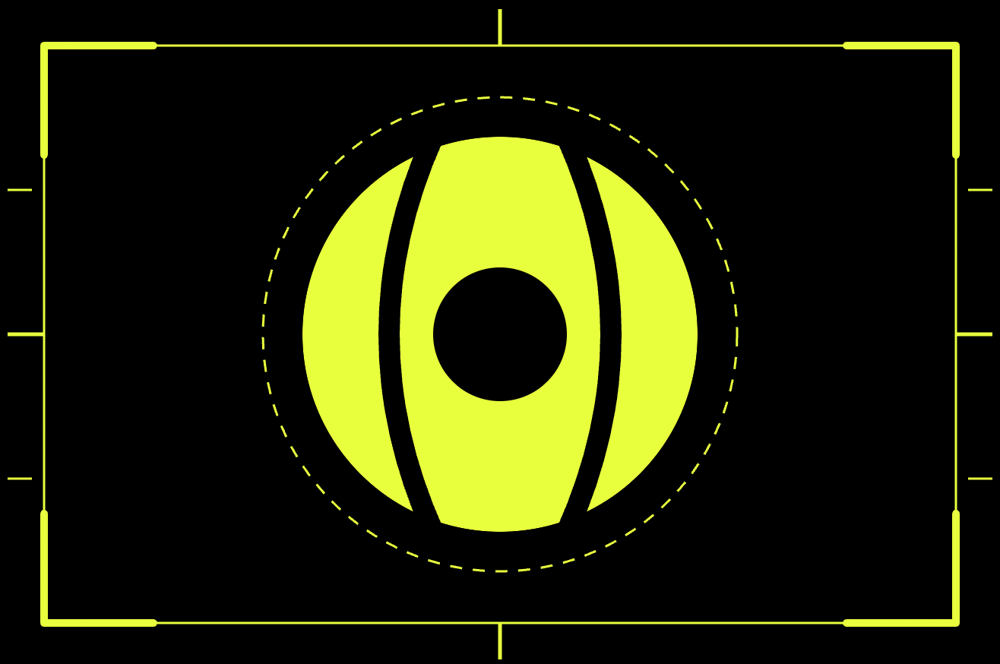

Watch your matches in minutes, not hours.
Give it a match video and click the four corners of the court once. It gives you back a reel of just the rallies — no waiting between points, no walking to pick up balls. Everything happens on your own Mac; your video is never uploaded anywhere.
AnyaTennis.dmg. A window appears with
the Anya Tennis icon and an Applications folder.When a newer version is out, Anya Tennis shows a banner at the top of the window the next time you open it. Click Download, quit the app, and drag the new one onto Applications the same way — choose Replace when macOS asks. Your videos and everything the app has already worked out about them are untouched.
No. All the processing happens on your Mac, and no video, image or
frame ever leaves it. The only thing the app sends over the internet is a
request asking GitHub what the latest released version number is — no
account, no identifier, nothing about you or your matches. You can turn
even that off by setting ANYA_NO_UPDATE_CHECK=1.
About 320 MB to download, around 2 GB installed. It carries its own copies of the machine-learning models that find the ball and the players, and of the video tools that cut the reel, so you don't have to install anything separately.
Roughly 1.6 × the length of the clip the first time. A 7-minute 4K clip took about 11 minutes on an M4. Running it again on the same video is much faster — it remembers what it already worked out.
Two things: the version number, shown in the top-right corner of the
app window, and the log file. You'll find the log in Finder via
Go → Go to Folder… and pasting
~/Library/Logs/Anya Tennis. Send
app.log along with what you were doing when it happened.
Not yet. A Windows build is planned but hasn't been tested — this beta is Mac only.